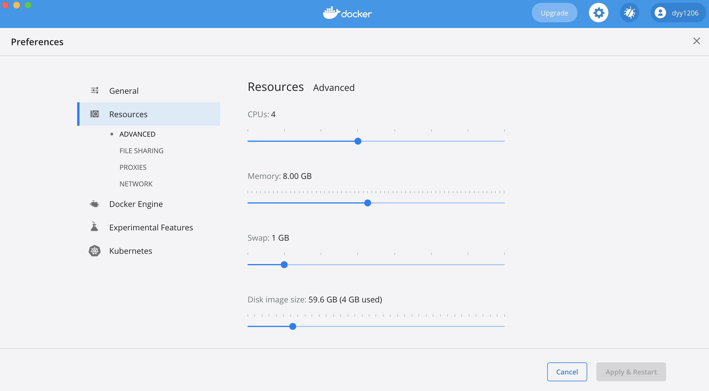
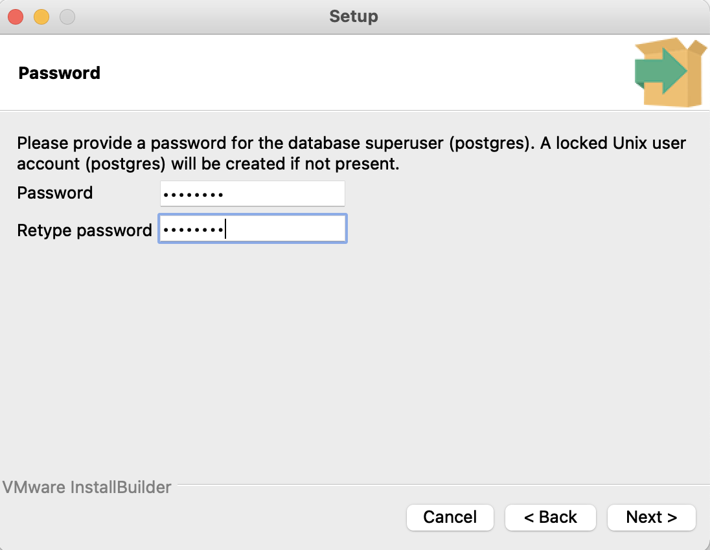

Sentry 的安装和使用
1. Sentry 简介
从错误跟踪到性能监控，Sentry 可以帮助开发人员看到真正重要的事情，更快的解决问题，并且不断的了解他们的程序。
1.1 应用实例
分布式追踪帮助开发者应对全栈程序日益复杂的监控需求。
通过 Sentry 的性能监控，可以将性能问题追溯到造成缓慢的 API 调用和数据库查询。
跟踪视图和跟踪导航器提供跨所有项目事务的贯穿线。
使用 Suspect span 追踪事务中花费最多时间的地方。
1.2 Sentry 特性
- 获取内容：
追溯到源代码，过滤错误，获取堆栈局部变量 —— Sentry 通过 堆栈追踪 增强了应用程序的性能监控。 - 发现缓慢：
在性能问题演变成宕机前快速识别它们 —— 查看整个端到端的分布式追踪，以查看准确的性能较差的API调用，并找出相关的错误。 - 展示事件轨迹：
Breadcrumbs 通过显示导致错误的事件轨迹，可以简化应用程序开发。 - 高亮版本变更：
Sentry 提供了发布版对哪些错误进行了处理以及哪些错误是首次引入的可视化。 - 赋予控制权：
软件开发周期可能充满了模糊性。问题所有者可以将修复代码中问题的控制权交还给开发人员。 - 自定义查询：
实时应用监控意味着实时的数据。使用 Discover(Sentry’s query builder) 查询组织的原始事件数据。 - 数据可视化：
Dashboard 为应用程序监控添加了可视化元素。
1.3 企业级应用
跨职能的可视化：
Sentry 为工程师、运维、产品和其他人员提供可视化，使整个组织可以了解应用程序的运行状况。规模和高可用性：
不必担心事件飙升，Sentry 服务的每个部分都使用适当配置的冗余服务器，并定期维护。显而易见的可靠性：
通过检查实时跟踪运行时间的 dashboard，可以发现 Sentry 几乎不会出现问题。
2. Self-Hosted Sentry
2.1 准备环境
2.1.1 Docker desktop
下载并安装 Docker Desktop 。
设置 Resource > Memory 为 8GB：

Docker Desktop
Docker Desktop 易于安装在 Mac 或 Windows 环境，可以帮助开发者构建和分享容器化的应用和微服务。Docker Desktop 包括 Docker Engine, Docker CLI client, Docker Compose, Docker Content Trust, Kubernetes, 以及 Credential Helper。
Docker Compose
Compose 可以定义并运行多容器的 Docker 应用。在 Compose 中，使用一个 YAML 文件来配置应用程序的服务，然后使用单行命令就可以创建并启动配置好的所有服务。
Compose 为所有环境工作：production, staging, development, testing, 以及 CI workflows。
使用 Compose 基本需要3个步骤：
· 1. 使用Dockerfile文件定义你的应用环境，以便可以复制到任何位置。
· 2. 在docker-compose.yml文件中定义组成应用的服务，以便它们可以在一个独立的环境中一起运行。
· 3. 运行docker compose up以及 Docker compose 命令来启动和运行整个应用程序。或者你可以使用 docker-compose 库，运行docker-compose up。
2.1.2 Postgresql
使用 EnterpriseDB 下载安装 Postgres，下载地址：
https://www.enterprisedb.com/downloads/postgres-postgresql-downloads
选择合适的版本：
双击安装：
过程中需要设置超级用户（postgres）的密码，以及数据库位置等：

在安装目录下找到 pgAdmin 启动：
打开终端，运行 lsof -i:5432 命令查看端口占用情况。
创建角色 sentry ：
创建数据库 sentry ：
2.1.3 Redis
从 Redis 官网下载最新版本。
解压：
tar -zxf redis-7.0.0.tar.gz
编译安装：
cd redis
make
make install
后台启动 redis 服务器:
cd src
nohup redis-server > ../redis.log 2>&1 $
redis 默认端口为 6379。
2.2 使用 Docker 安装 Sentry
下载最新版本的 Sentry，然后在根目录下运行 ./install.sh ，这个脚本会为你准备好所需的一切，包括一个基本的配置。然后会提示你运行 docker-compose up -d 来启动 sentry。
安装时遇到问题：
./install/_lib.sh: line 22: realpath: command not found
解决方法：补充安装 coreutils（使用 homebrew）
brew install coreutils
参考：https://github.com/getsentry/onpremise/issues/941
Sentry 的默认端口为 9000 ，访问 http://127.0.0.1:9000/ 。